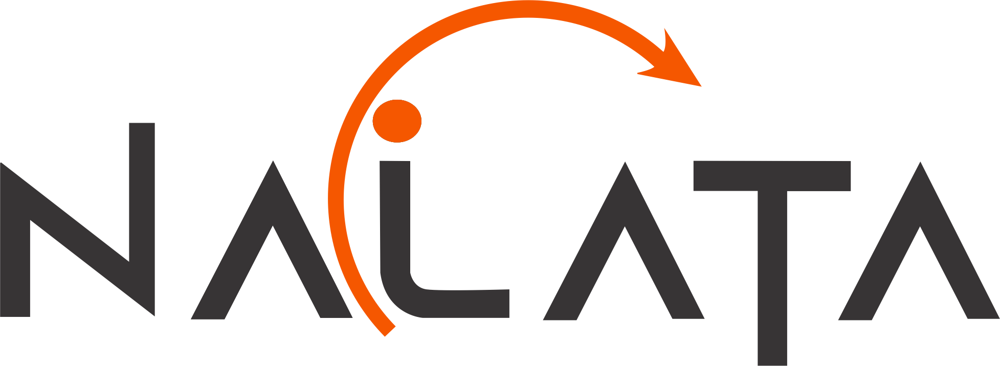
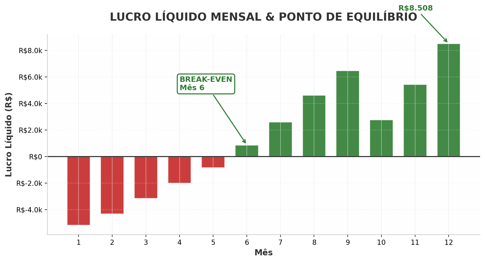
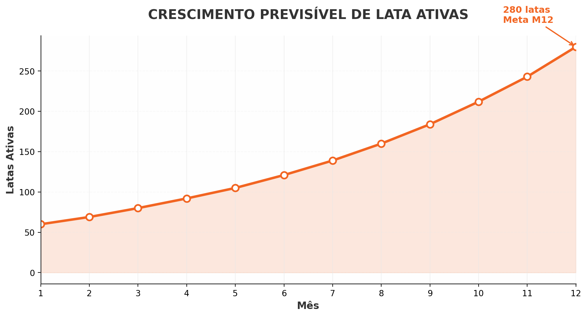
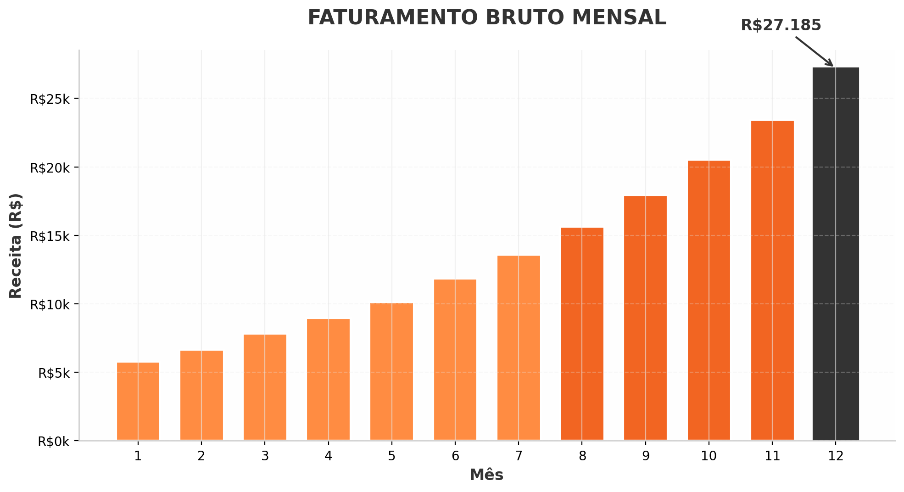

Descubra como transformar custo em lucro previsível com o único modelo operacional de descarte inteligente validado para escalar de {{LATAS_INICIAL}} para {{LATAS_ALVO_M12}} latas em 12 meses.
"Não vendemos latas. Entregamos previsibilidade, margem e um negócio que cresce sozinho a partir do {{BREAK_EVEN_LOWER}}."
Documento confidencial. Simulação financeira baseada no modelo operacional Nalata REV7. Projeções realizadas em {{DATA}}.
O mercado de descarte inteligente está em expansão acelerada, mas a maioria dos operadores comete o mesmo erro fatal: trata o descarte como custo, não como receita.
"O descarte inteligente não é um problema de logística. É um problema de modelo de negócio. Quem resolve primeiro, domina o mercado."
A Nalata não é apenas uma operação de coleta. É um modelo de negócio completo, testado e otimizado para transformar cada lata em uma máquina de gerar lucro previsível.
Nossa metodologia de simulação foi construída a partir de dados reais de operação. Ela elimina a adivinhação e entrega um mapa exato do que você precisa fazer no M1, no M6 e no M12 para atingir a rentabilidade.
Preço médio ponderado de {{PRECO_MEDIO}} por lata, com mix inteligente de {{MIX_AVULSA}}% vendas avulsas.
{{MODULOS_M12}} módulo operacional, {{CICLOS_MES}} ciclos por lata/mês. Máximo de receita, mínimo de complexidade.
De {{LATAS_INICIAL}} para {{LATAS_ALVO_M12}} latas ativas em 12 meses, com curva de crescimento matematicamente projetada.
Break-even no {{BREAK_EVEN_LOWER}}. Você sabe exatamente quando o negócio começa a pagar por si só.
Nosso simulador foi calibrado para um cenário moderado e realista. Não usamos otimismo de consultoria. Usamos números que você pode replicar na sua operação a partir do primeiro dia.
| Parâmetro | Dados | Impacto no seu bolso |
|---|---|---|
| Latas ativas alvo (Mês 12) | {{LATAS_ALVO_M12}} latas | Base sólida para faturamento de {{FATURAMENTO_M12_K}}/mês |
| Latas físicas necessárias | {{LATAS_FISICAS_M12}} unidades | Alta rotação: cada lata trabalha {{CICLOS_MES}}× por mês |
| Preço médio ponderado | {{PRECO_MEDIO}} / lata | Mix {{MIX_AVULSA}}% avulso + {{MIX_PACOTE}}% B2B otimiza margem |
| Ciclos por lata / mês | {{CICLOS_MES}} ciclos | Máxima utilização do ativo, mínimo investimento inicial |
| Equipe Operacional | {{MODULOS_M12}} equipe(s) | Simplicidade operacional = menos custo fixo |
| Capital de giro | {{CAPITAL_GIRO}} | Investimento inicial mapeado e controlado |
"{{LATAS_FISICAS_M12}} latas físicas geram o mesmo resultado de {{LATAS_ALVO_M12}} latas ativas. A diferença está na velocidade de rotação. Isso é eficiência."
A maioria dos negócios falha porque o empreendedor desiste antes da curva. Com a Nalata, você sabe exatamente quando acontece a virada. No {{BREAK_EVEN_LOWER}}, o prejuízo vira lucro. E depois disso, a tendência é só de alta.

Fase de aceleração. Investimento controlado com perda decrescente.
Lucro crescente. Do {{BREAK_EVEN}} ao M12, crescimento de {{CRESCIMENTO_LUCRO_PCT}} no resultado.
O crescimento não é linear — é exponencial. À medida que a base de latas ativas aumenta, o faturamento se multiplica. Veja como a curva se comporta mês a mês:

CURVA DE ADESÃO DE LATAS ATIVAS

EVOLUÇÃO DO FATURAMENTO BRUTO
"A receita do mês 12 é {{CRESCIMENTO_MULT}} maior que a do mês 1. Isso não é sorte. É o efeito da rotação multiplicada pela base crescente de latas."
Não acredite em promessas vazias. Acredite em matemática. Aqui está o panorama completo do seu negócio Nalata no mês 12, operando exatamente dentro dos parâmetros simulados:
O descarte inteligente está deixando de ser nicho para virar infraestrutura urbana essencial. Quem entra agora com um modelo validado constrói barreiras de entrada que os concorrentes tardios não conseguirão derrubar.
"Em mercados em expansão, não é o maior que vence. É o mais eficiente. O modelo Nalata Descarte Inteligente foi construído para ser exatamente isso: a operação mais enxuta do mercado."
Esta simulação não é uma promessa. É um mapa. E mapas só funcionam para quem decide sair do lugar. Nosso modelo de negócio está pronto. Os números estão claros. A única variável que falta é você.
As vagas para novos operadores Nalata são limitadas por região.
Garanta a sua análise personalizada antes que a sua área seja fechada.
Projeções baseadas no modelo operacional Nalata REV7. Não constituem garantia de rendimento.
Simulação elaborada em {{DATA}}. Documento confidencial.